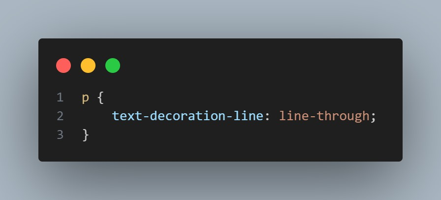
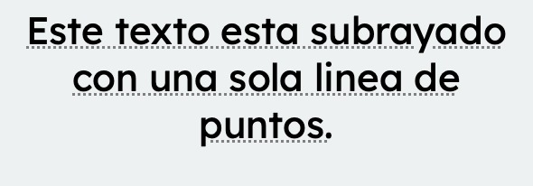
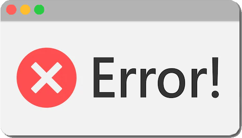
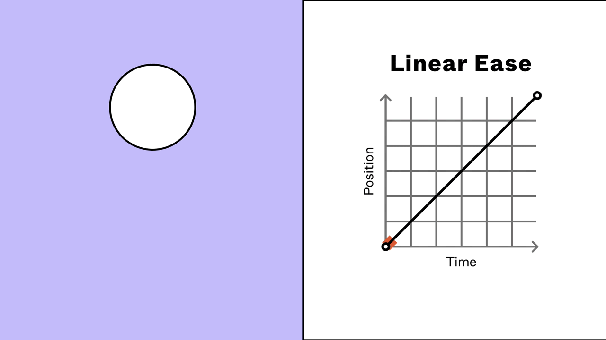
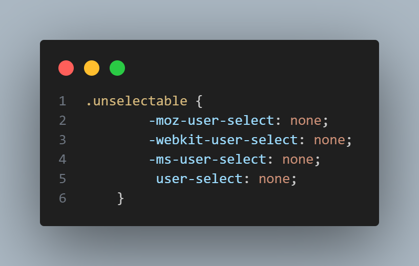
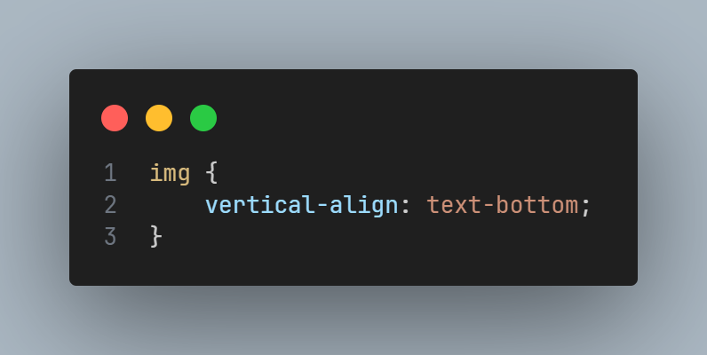
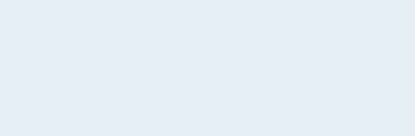
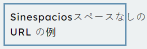
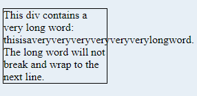
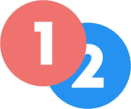

PROPIEDADES CSS
Text-align
Establece la alineación horizontal del texto dentro del los límites del contenedor en el que se encuentra.
Left
Texto situado a la izquierda.
Center
Texto situado en el centro.
Right
Texto situado a la derecha.
Justify
El texto se espacia tanto como sea necesario para que el incio y final de cada linea (menos la final) coincida con los límites del contenedor.
Start
A la izquierda si la dirección del texto es de izquierda a derecha, si no, a la
derecha.

End
A la derecha si la dirección del texto es de izquierda a derecha, si no, a la
izquierda.
Text-combine-upright
La propiedad CSS text-combine-upright establece la combinación de caracteres en el espacio de un solo carácter.
None

No hay ningún procesamiento especial.
All
Pondra todos los caracteres consecutivos dentro del cuadro horizontalmente.
Text-decoration-color
La propiedad CSS text-decoration-color establece el color de las decoraciones.
Color
RGB

#
Current color
Text-decoration-line
La propiedad CSS text-decoration-line establece el tipo de decoración que se utiliza en el texto de un elemento, como un subrayado o un subrayado.
None
No produce decoración en el texto.
Underline
Cada línea de texto, tiene una línea decorativa debajo.
Overline

Cada línea de texto, tiene una línea decorativa encima.
Line-through
Cada línea de texto tiene una línea decorativa que pasa por el centro (tachado).
Text-decoration-style
Define el estilo de las líneas especificadas por text-decoration-line.
Solid

Cada linea de texto tiene una linea simple debajo
Double
Cada linea de texto tiene una linea doble debajo
Dotted
Cada linea de texto tiene una linea de puntos debajo
Dashed
Cada linea de texto tiene una linea discontinua debajo
Wavy
Cada linea de texto tiene una linea ondulada debajo
Text-indent
La propiedad CSS text-indent establece la longitud del espacio vacío que se coloca antes de las líneas de texto en un bloque.
Indent

Crea un espacio al principio de la primera fila.
❌ Indent-Each-line

Afecta a la primera línea del contenedor de bloques, así como a cada línea después de un salto de línea forzado, pero no afecta a las líneas después de un salto suave.
❌ Indent-hanging
Invierte qué líneas están escritas. Todas las líneas excepto la primera tendrán espacio.
❌ Text-justify ❌
Esta propiedad CSS establece qué tipo de justificación se debe aplicar al texto cuando se establece en un elemento.text-align: justify; (Este propiedad esta deshabilitada, usar text-align)
None
Text-justify esta desactivada. Se aplicaría la configuración del text-align.
Auto
El navegador elige el mejor tipo de justificación para la situación actual basándose en un equilibrio entre rendimiento y calidad.
Inter-word
El texto se justifica agregando espacio entre palabras.
Distribute
El texto se justifica añadiendo espacio entre caracteres, lo cual es mas util para idiomas como el japonés.
Text-orientation
La propiedad CSS text-orientation establece la orientación de los caracteres de texto en una línea. Solo afecta al texto en modo vertical (cuando el modo de escritura no es horizontal). Es útil para controlar la visualización de idiomas que utilizan alfabetos verticales y también para crear encabezados de tabla verticales.
Mixed
Gira los caracteres 90° en el sentido de las agujas del reloj. Presenta los caracteres de las escrituras verticales de forma natural.
Upright
Presenta los caracteres de las escrituras horizontales de forma natural (vertical), así como los pictogramas de las escrituras verticales. Todos los caracteres se consideren de izquierda a derecha.
Text-overflow
Establece el la manera de mostrar texto cuya longitud sobrepase a su contenedor.
Clip
Trunca el texto en la posición exacta, incuso si dicho punto es el medio de un caracter.
Ellipsis
Evita que el texto se trunque en el medio de un caracter, añade '...' al final.
❌ "String" ❌
Como 'Ellipsis', pero permite reemplazar el string: '...' por un string personalizado. (Valor descontinuado)
Text-shadow
Permite agregar sombra al texto y a su propia decoración (subrayado, tachado...)
Offset
Modifica la posición/desfase de la sombra.
Color
Cambia el color de la sombra
Blur Radius
Modifica el radio del desenfoque de la sombra (Más o menos nítida)
Text-transform
Esta propiedad transforma tu texto variando entre mayúsculas y minúsculas según lo que le pidas.
Capitalize
Pone en mayúscula la primera letra de cada palabra
Uppercase

Pone todo el texto en mayúscula
Lowercase
Pone todo el texto en minúscula

None
Deja el texto tal cual lo tienes en tu código
Top-transform-origin
La propiedad CSS transform-origin establece el origen de las transformaciones de un elemento.
Origin 0 0
Origin 100% 100%
Origin -1em -3em
Transform-Style
La propiedad transform-style CSS establece si el elemento hijo esta posicionado en el espacio 3D o esta integrado en el plano del elemento.
Flat
Indica que el elemento hijo yace en el plano del elemento mismo.
Preserve-3D
Indica que el elemento hijo debe ser posicionado en el espacio 3D.
Transition-delay
Nos ofrece la posibilidad de retrasar el inicio de la transición un número de segundos determinado. Si se omite, la transición comienza inmediatamente.
Delay 0
La transición se hace sin retraso alguno, en cuanto ponemos el puntero en la imagen.
Delay 1s
Establecemos 1 segundo de retraso desde que ponemos el puntero en la imagen.
Transition-duration
Con la propiedad transition-duration especificaremos la duración de la transición, desde el inicio de la transición, hasta su finalización.
Duration 0.5s
Duration 2s
Transition-property
Según el valor del property, la transición se aplicará en determinados efectos/movimientos
Custom
Dependiendo del valor que le demos se le aplica un efecto u otro, como por ejemplo, un margin-left, color, background-color ...
All
Aplica la transición a cualquier efecto/movimiento
None
Esta transición no se muestra nada como su nombre indica
Transition-timing-function
Permite establecer una curva de aceleración a una transición para que su velocidad varíe durante la animación.
Linear
No existe aceleración alguna, por lo tanto, la velocidad se mantiene constante.
Ease-in

Comienza más lento y acelera hacia el final.
Ease-in-out
Comienza lento, acelera en el medio y vuelve a frenar.
Ease-out
Es la inversa que el Ease-in, frenando al final.
Step
Se establecen un número de pasos ('frames'). Usando 'jump + start/end/none/both' podemos ajustar cuando se mostrará cada paso.

User-select
La propiedad controla si el usuario puede seleccionar el texto y de que forma.
None
Este texto no puede ser seleccionado por el usuario.

All
Este texto puede ser seleccionado por el usuario con un solo click.
Vertical-align
Permite alinear verticalmente, por ejemplo, una imagen o contenedor en relación a un texto.
También es útil para alinear el contenido de las celdas de una tabla en el eje vertical.
Baseline
Hace coincidir la parte de abajo del elemento padre y el hijo en cuestión.
Sub
Alinea el elemento como un subíndice del padre.
Super
Alinea el elemento como un superíndice del padre.
Text-top
Hace coincidir el elemento con la parte superior del texto del padre.
Text-bottom
Hace coincidir el elemento con la parte inferior del texto del padre.

Custom

Permite, usando distintas unidades y porcentajes, personalizar la posición vertical del elemento.

Top
Hace coincidir la parte inferior del elemento con la superior del padre.
Middle
Alinea el centro del elemento con el centro del padre.
Bottom
Hace coincidir la parte superior del elemento con la inferior del padre.
Visibility
La propiedad de visibilidad especifica si un elemento es visible o no.
Hidden
No hay ningún procesamiento especial.
Visible
Pondra todos los caracteres consecutivos dentro del cuadro horizontalmente.
White-Space
Determina cómo se maneja el espacio en blanco y los saltos de línea dentro de un elemento.
Normal
Funcionamiento por defecto, reemplazando las secuencias de espacios en blanco por un único espacio.
Nowrap

Reemplaza las secuencias de esavcios en blanco como el 'Normal', pero no respeta los saltos de línea.

Pre
Mantiene las secuencias de espacios en blanco. Solo se pasa a la siguiente línea con saltos de línea manuales.
Pre-wrap

Funciona como el 'Normal' pero mantiene las secuencias de espacios en blanco.

Pre-line
Muy similar al 'Normal'.
Width
La función de esta propiedad es ajustar el ancho de tu imagen, texto ...
Custom

Puedes ajustarlo con los valores que tu quieras
Auto

Se ajusta automáticamente
Max-content

Se ajusta al texto y además, lo mantiene todo en la misma linea da igual la longitud
Min-content

Lo ajusta de la manera más estrecha posible
Fit-content

Es parecido al max-content, la unica diferencia es que no lo mantiene en la misma linea
Word-Break
Establece si los saltos de línea aparecen en cualquier lugar donde el texto desbordaría su cuadro de contenido..
Normal
Usa la regla de salto de línea predeterminada.
Break-All
Introduce saltos de línea para evitar cualquier desbordamiento.
Keep-All
Es lo mismo que el valor normal pero no debe usarse para texto en CJK.
Keep-Word
Se utiliza para dividir las palabras en puntos arbitrarios y evitar el desbordamiento.
Word-spacing
La función de esta propiedad es proporcionar más o menos espacio entre las palabras de tu texto
Normal
Deja el texto tal cual, es como si no aplicaramos nada
Más Separación
Añade más espacio entre cada palabra de tu texto dependiendo del valor que le pongas
Menos Separación
Añade menos espacio entre cada palabra de tu texto dependiendo del valor que le pongas, para ello tendrás que poner un '-' antes del valor
Word-wrap
La propiedad de ajuste de palabras permite dividir palabras largas y ajustarlas a la siguiente línea.
Normal
No hay ningún procesamiento especial.
Break-word
Permita que las palabras largas puedan dividirse y pasar a la siguiente línea
Writing-mode
La función de esta propiedad es colocar el texto donde le pidamos y puede ser:
Horizontal

El texto lo coloca de manera horizontal
Vertical-lr

El texto lo coloca de manera vertical situado a la izquierda
Vertical-rl
El texto lo coloca de manera vertical situado a la derecha
Z-index
Hace posible personalizar el orden en el que se superponen los elementos.
Auto
El nivel de superposición es el mismo que el del padre.
Custom
El nivel de superposición se corresponde con el valor numérico utilizado.